github加hexo搭建个人博客（五）
hexo 主题的使用和相关设置
hexo 有着很多好看有趣的主题，我们可以去主题官网上查看、下载和使用。 我这里使用的是 butterfly。
butterfly 主题的安装和配置
在博客目录下，打开 Git Bash，输入：
git clone -b master https://github.com/jerryc127/hexo-theme-butterfly.git themes/butterfly |
进行安装。
安装 pug 以及 stylus 的渲染器。
npm install hexo-renderer-pug hexo-renderer-stylus --save |
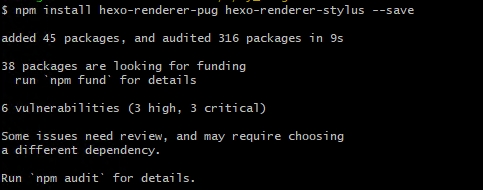
将 _config.yml 中的主题换成 butterfly 。
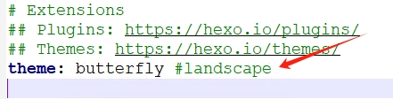
部署成功后，我们的博客变得更加的漂亮。
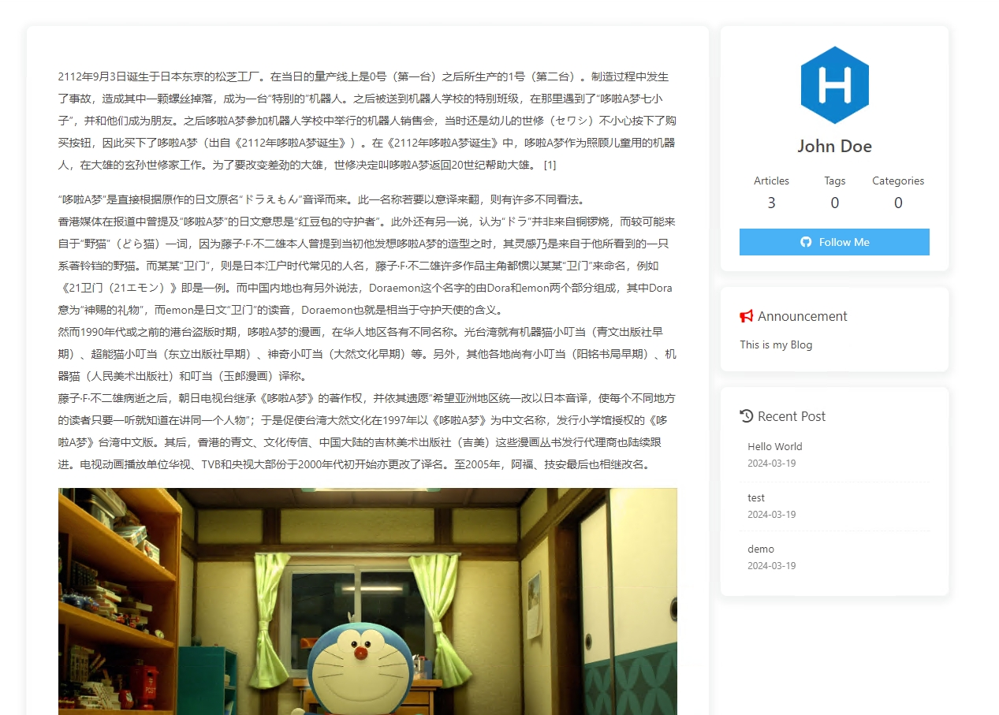
我们接下来可以按照 butterfly 的官方教程网站进行修改，加上特效和一些其他的功能，就可以让博客变得很漂亮和炫酷，就像butterfly 的官方教程网站一样。
设置搜索功能
当我们的博客内容越来越多的时候，能够快速搜索到相应的文章，就会显得越来越重要。 我们采用本地搜索，先安装相关的插件：
npm install hexo-generator-search --save |
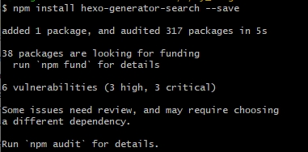
install hexo-generator-search 插件会把文章的信息生成一个搜素的数据库保存到本地，因此搜素的速度很快。在博客的配置文件 _config.yml 中添加：
search: |
修改主题的配置文件 _config.butterfly.yml ，打开 local_search：
local_search: |
生成搜素文件：
hexo generate |
部署到 github 上，可以看到搜素栏可以使用。
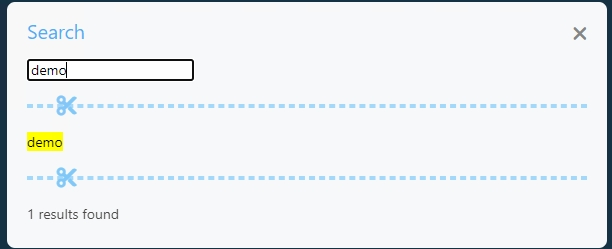
设置评论区和 Gitalk 的使用
由于 hexo 是纯静态博客框架，所以其本身无法支持评论功能，需要第三方平台和软件的支持。在博客中我们需要读者的评论和交流，以提高我们的技术。因此我们需要给博客添加评论功能，我们采用的是利用 github 的免费评论平台—— Gitalk 。
配置部署
- 进入 github 主页，点击右上方头像，点击 Settings
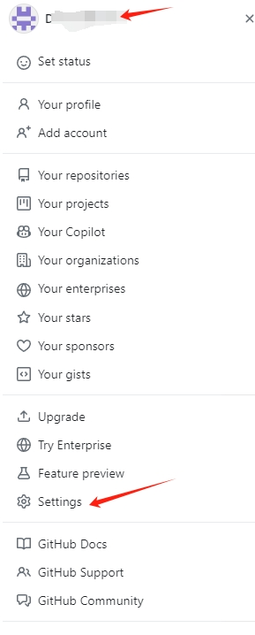 - 下拉到最后点击 Developer settings
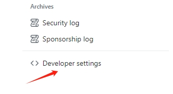 - 依次点击 QAuth Apps ，Register a new application
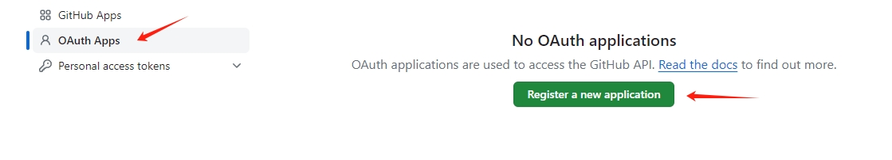 - 填好之后点击 Regiter application
- 点击 Generate a new client secret , 并复制 Client ID 和 Client secrets。
- 修改主题的配置文件 _config.butterfly.yml
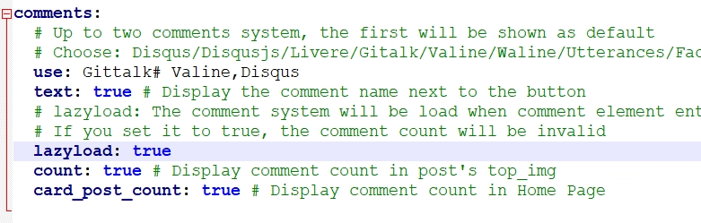
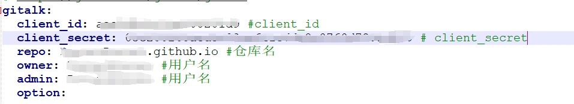
部署到 github 上可以看到评论已经开启。
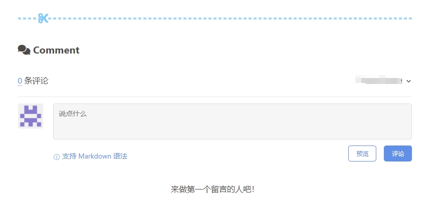
参考
本博客所有文章除特别声明外，均采用 CC BY-NC-SA 4.0 许可协议。转载请注明来自 哆啦酱的点心屋！
相关推荐


评论